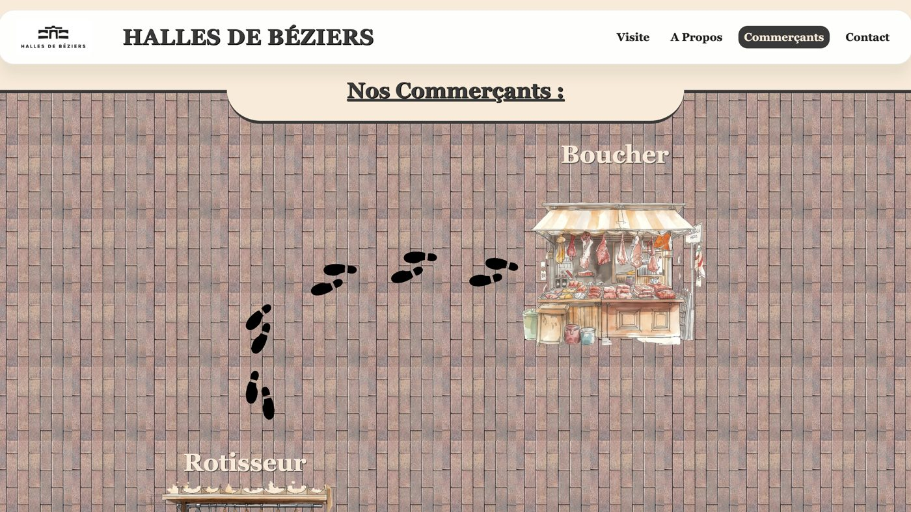
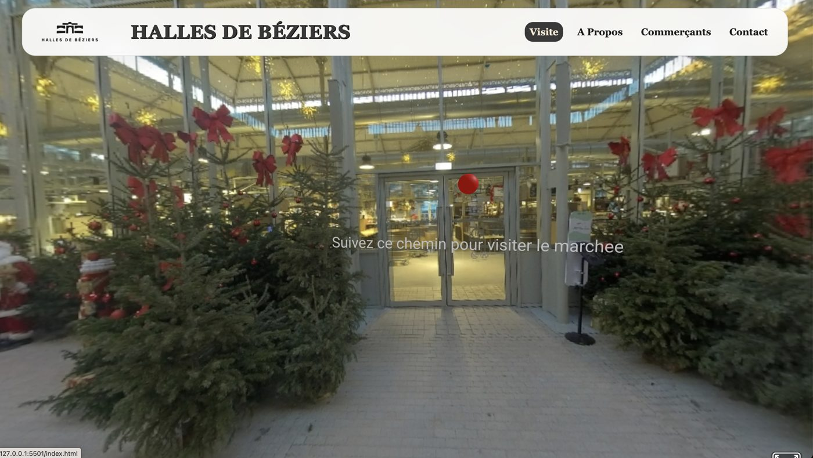
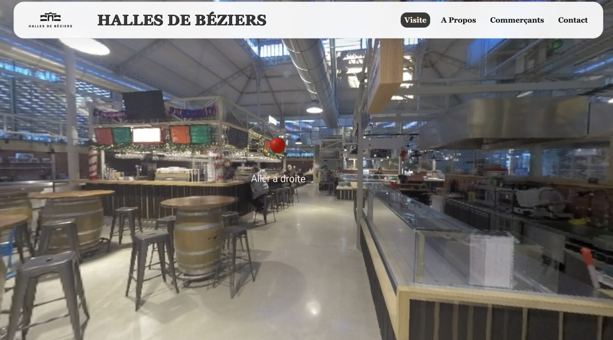

01 / 12
01 / 12Halles de Béziers
Site vitrine · Visite 360°
Site vitrine des Halles de Béziers, le marché couvert historique de la place Jean Jaurès : présentation du lieu et de ses horaires, annuaire d'une vingtaine de commerçants (bouchers, écaillers, traiteurs, fromagers…), page contact et mentions légales.
Le tout est développé en HTML, CSS et JavaScript vanilla, sans framework : navigation responsive avec menu burger sur mobile, une feuille de style et un script dédiés par page, et une hiérarchie de fichiers propre et documentée.
La pièce maîtresse du projet est une visite virtuelle à 360° construite avec A-Frame : douze points de vue panoramiques couvrent le marché, de l'entrée jusqu'au fond des allées. Des sphères cliquables, animées au survol, permettent de se déplacer d'un point de vue à l'autre comme dans une visite immersive.
Ce projet m'a appris à structurer un site multi-pages complet, à rendre une interface responsive et à intégrer de la 3D interactive dans une page web — le tout dans le cadre de la SAÉ « Produire un site web » du BUT Métiers du Multimédia et de l'Internet.


